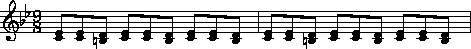
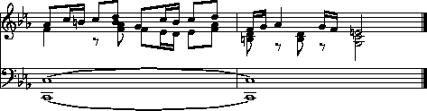
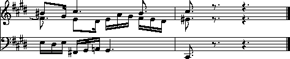

|
|
The patt command may be regarded as a two-dimensional version of grep. Like grep, patt searches for lines that match user-specified regular expressions. However, unlike grep, patt can search for a sequence of records that match a sequence of user-specified regular expressions. Specifically, patt will look for an input line that matches the first (of potential many) user-specified regular expression. Then patt will determine whether the following input line matches the second user-specified regular expression ... and so on, until the entire sequence of the user-specified regular expressions are exhausted. A pattern match is deemed to occur only if all of the successive regular expressions match a contiguous sequence of input lines.
The operation of
patt
is easier to describe through an example.
Consider the following input using the German
Tonhöhe pitch designations described in
Chapter 4.
Recall that the
**Tonh
system of pitch names allows Bach to spell his name
(B=B-flat; H=B-natural).
Less well-known is the fact that Dmitri Shostakovich also used the
German pitch system to create motives based on his name:
D-S-C-H (S=Es=E-flat).
(The German transliteration of the cyrillic is Schostakowitsch.)
Suppose we were looking for possible instances of D-S-C-H. The patt command requires a template file that contains one or more successive regular expressions. A suitable template file (named
**TonhD4Es4C4H3*-
dmitri) would be as follows:
DEsCH
We would invoke the search as follows:
patt -f dmitri inputfile
The -f option is mandatory: it conveys to patt the name of the template file used in the search.
In the default operation, patt simply outputs a global comment identifying the location of any matching segments. One global comment is output for each matching pattern. In the above case, the output would be as follows:
!! Pattern found at line 2 of file Tonh
The patt command will also identify any overlapping patterns. For example, suppose we had an input containing an ostinato figure in minor thirds:
Example 21.1. `DSCH' Ostinato.

**Tonh**Tonh *k[b-e-]*K[b-e-] *M9/8*M9/8 =1-=1- C4Es4 C4Es4 H3D4 C4Es4 C4Es4 H3D4 C4Es4 C4Es4 H3D4 ==
If we applied the above
patt
command to this ostinato file, we would get the following output:
!! Pattern found at line 8 of file ostinato
!! Pattern found at line 11 of file ostinato
We can instruct patt to output specific instances of the pattern using the -e (echo) option. Consider the following command:
patt -f dmitri -e ostinato
The resulting output would be:
!! Pattern found at line 4 of file ostinato
**Tonh**TonhH3D4C4Es4C4Es4H3D4*-*-
!! Pattern found at line 7 of file ostinato
**Tonh**TonhH3D4C4Es4C4Es4H3D4*-*-
Notice that each instance of the found pattern is output as a stand-alone
humdrum "mini-encoding," complete with initial exclusive interpretations
and terminating spine-path terminators.
Example 21.2. J.S. Bach, Well-Tempered Clavier, Vol. 1, Fugue 2.

Most Baroque composers were fond of ending works written in minor keys on the tonic major chord -- the so-called tierce de picardie or Picardy Third. Example 21.2 shows a typical example from the final measures of Bach's second fugue from the Well-Tempered Clavier, vol. 1. Suppose that we wanted to identify all works in some repertory that end with a tierce de picardie. We need to search for a raised third scale degree in close proximity to the end of a work for those works in a minor key. First we might identify those works in minor keys. The following grep command will search all files in the current directory for a tandem interpretation indicating a minor key. Recall that minor keys are identified by an asterisk followed by a lower-case pitch-letter name, followed by an optional accidental, followed by the colon character. The -l option will list all files that containing a matching record:
grep -l '^\*[a-g][-#]*:' *
Recall that the
deg
command is mode sensitive, whereas the
solfa
command is mode insensitive.
That is, in the key of C major,
deg
will represent the pitch E as 3 and in C minor
deg
will represent the pitch E (natural) as 3+.
By contrast, the
solfa
command will represent E as `mi' whether
the mode is major or minor.
In order to locate picardy thirds, we can look
for raised mediants in the
**deg
representation.
Specifically, we can look for a raised mediant pitch
immediately prior to a double barline.
Our template file (dubbed "picardy") might look as follows:
3[+]
==
Notice that the plus sign has been placed in square brackets. The patt command accepts only extended regular expressions. The plus sign is a metacharacter that normally indicates "one or more instances." So placing it in square brackets causes the special meaning to be escaped.
In order to search for such picardy thirds, we should translate each input file
to the **deg representation, and then search for
raised mediants immediately prior to a double bar:
deg inputfile.krn | patt -f picardy
A problem with this search strategy is that it assumes that the raised third will occur in the final sonority prior to the double barline. One possible confound might be the presence of one or more rests following the final chord. This situation is evident in Fugue No. 4 from the second volume of Bach's Well-Tempered Clavier:
Example 21.3. J.S. Bach, Well-Tempered Clavier, Vol. 2, Fugue 4.

!!!COM: Bach, Johann Sebastian!!!XEN: The Well-Tempered Clavier, Volume 2, Fugue 4.
**kern**kern **kern *clefF4*clefG2 *clefG2 *M12/16*M12/16 *M12/16 *k[f#c#g#d#]*k[f#c#g#d#] *k[f#c#g#d#] *c#:*c#: *c#: =70=70 =70 16E8.f#] 8b# 16D#. . 16E. 16g# 16FF##8e 4.cc# 16GG#. . 16AAn16d# . 4.GG#16e . .16a . .16g# . .16f# 8.b# .16e . .16d# . =71=71 =71 8.CC#8.e# 8.cc# 8.r8.r 8.r 4.r4.r 4.r ==== == *-*- *-
The
patt
command provides a
-s
option that allows the user to skip or ignore certain records in the input.
Any regular expression can be given as a parameter for the
-s
option.
In the following pipeline, we have instruction
patt
to skip over any records matching the lower-case letter `r'
(the **kern rest signifier):
deginputfile.krn| patt -s r -f picardy
Even ignoring rests may not be sufficient to identify the raised third near the double barline. For example, if any other note from the tonic chord follows after the raised third, then the third will appear several records prior to the double barline. We can solve this problem by using the ditto command discussed in Chapter 15; ditto can be used to propagate the raised third through the sustained final chord. Our revised pipeline is:
deg bach.krn | ditto -s = | patt -s r -f picardy
A similar approach can be used to identify consecutive fifths or
octaves between two voices.
A template file (dubbed 5ths) might consist of the following pattern:
P5
P5
In order to identify consecutive fifths, we might extract two
parts of interest, and then translate to the
**hint
harmonic-interval representation.
The
-c
option for
hint
collapses compound intervals to their non-compound equivalents so
consecutive twelfths, nineteenths, etc. will also be identified.
In the following command pipeline, notice the use of the
-s
option for
patt
in order to skip barlines.
This ensures that crossing a barline does not result in a failure to
identify a consecutive fifth.
extract -i '*Ibass,*Itenor' Fux | hint -c | patt -s = -f 5ths
Sometimes patterns will tend to be obscured by the presence of other information.
For example, suppose we want to identify possible Landini cadences
such as the cadence shown in Example 21.4.
Landini cadences are common in much 14th century polyphony including
works by Machaut, Caserta, Dufay, Ciconia, as well as Landini.
One characteristic of the Landini cadence is the distinctive three-note
ti -> la -> do in the upper-most part.
The submediant pitch is interposed between the leading-tone and the tonic.
A second characteristic of the Landini cadence is the harmonic relationship
between the highest and lowest voices.
Three intervals are formed: sixth -> fifth -> octave.
Either one or both of these characteristics might be used to help
identify this distinctive cadential formula.
Example 21.4. Francesco Landini, Excerpt from Non avrà ma' pietà.
Below is a
**kern
encoding of the final two measures along with corresponding
**hint
and
**deg
spines.
The **hint spine was generated using
hint
-l
in order to generate intervals with respect to the lowest pitch.
!!!COM: Landini, Francesco
**kern**kern**kern**hint**deg**deg **deg *clefF4*clefG2*clefG2*****M3/4*M3/4*M3/4*M3/4*M3/4*M3/4*M3/4=======4A4e8eP5 P5v2v6^6..8f-. . ^7-4B-4d8gM3 M6^3-v5^1 ..4f#-. . v74A4c#.M3v2v4+. ..8e-. . v6=======2.G2.d2.gP5 P8v1^5^1========== == == *-*-*-*-*- *- *-
Notice that hint has failed to generate the passing interval forming the perfect fifth between the E and the A. This can be remedied by using ditto to duplicate all of the pitches. This will cause hint to generate all of the passing harmonic intervals. The revised **hint spine is given below.
!!!COM: Landini, Francesco
**kern**kern **kern **hint **deg **deg **deg *clefF4*clefG2 *clefG2 * * * * *M3/4*M3/4 *M3/4 *M3/4 *M3/4 *M3/4 *M3/4 == = = = = = 4A4e 8e P5 P5 v2 v6 ^6 .. 8f P5 m6 . . ^7- 4B-4d 8g M3 M6 ^3- v5 ^1 .. 4f# M3 A5 . . v7 4A4c# . M3 M6 v2 v4+ . .. 8e M3 P5 . . v6 == = = = = = 2.G2.d 2.g P5 P8 v1 ^5 ^1 ==== == == == == == *-*- *- *- *- *- *-
One way to identify Landini cadences is to use the following harmonic-interval template
file (dubbed LandCadence):
658
Using this template, we can identify Landini cadences as follows. (Notice the use of -s ^= to skip barlines.)
ditto -s ^= input | hint -l | patt -s ^= -f LandCadence
It is possible that the 6-5-8 figured bass might arise in non-cadential
situations, so a more circumspect template might also include some
scale-degree movements as well.
The following template file (dubbed Landini-Cadence) combines both the
harmonic-interval and scale-degree data:
[Mm]6
P5.*v6
P8.*\^1
Using this more sophisticated pattern template, a suitable sequence of commands would be the following:
ditto -s ^= inputfile | hint -l > temp1
deg inputfile > temp2
assemble temp1 temp2 | patt -s ^= -f Landini-Cadence
In general, patt templates can be used to specify both concurrent conditions as well as dynamic or temporal conditions. This allows users to define patterns involving a multitude of conditions involving many different types of data.
So far, we have seen that patt provides two kinds of output. In the default operation, patt outputs a simple global comment each time it finds a matching segment in the input. With the -e option, patt will also echo the specific passage(s) found. In addition, patt provides a third type of output using the -t option.
When the
-t
option is invoked,
patt
will output the original input, plus an addition **patt spine.
The **patt spine typically consists of mostly null tokens.
However, each time the input matches the sought pattern, a user-defined
"tag" will appear in the **patt spine.
Consider the following example.
Suppose we are interested in identifying deceptive cadences in
Bach's chorale harmonizations.
Imagine that we already have a
**harm
spine containing
a Roman numeral harmonic analysis.
There are different ways of defining a deceptive cadence,
but a frequent definition is that it involves a dominant
chord followed by a submediant chord in a cadential context.
In the case of Bach's chorale harmonizations, cadences
are readily identified by the pause symbol.
Our search template might look as follows:
^V([^I]|$)
(vi)|(VI);
This template means: "look for an upper-case letter V
appearing at the beginning of a line that is followed
by either the end of the line ($) or by a character
other than the upper-case letter I.
This record will be followed by a record containing
either vi or VI followed by a semicolon."
When invoking the patt command, we can specify our preferred output tag along with the -t option as follows:
extract -i '**harm' bwv269.krn | patt -f template -t deceptive
**harm**patt I. I. ii7. Vdeceptive vi;. V. I. IV. IV. I. V;. etc.
In Chapter 26 we will learn how to collapse several spines into a single spine. This will allow us to assemble the results from several "passes" using patt -- one pass for each type of cadence. For example, we could collapse several tagged outputs to produce a single spine that identifies all of the various types of cadences:
**harm**cadences I . I . ii7 . V deceptive vi; . V . I . IV . IV . I half V; . etc.
There are no restrictions as to the types of tags that can be generated by patt. A user might tag the beginning of motivic or thematic statements, various harmonic progressions, variation techniques, fingering patterns, quotations or allusions, stylistic clichés, etc. In Chapter 35 we will use the -t option to label different set forms for statements of a twelve-tone row, such as primes, inversions, retrogrades, and retrograde inversions. We will use suitable tags to identify the specific transpositions: P0, I7, R11, RI8, etc.
Twelve-tone music raises several special issues for sequential pattern matching.
For example, it is common in serial music to collapse segments of a tone-row in order
to create vertical chords.
Consider the following excerpt from Ernst Krenek's suite for solo 'cello.
The tone row consists of the ordered pitches:
D, G-flat, F, D-flat, C, B, E-flat, A, B-flat, A-flat, E, G.
Example 21.5. Ernst Krenek, Opus 84 Suite for Violoncello; mov. 1, measures 28-30.
Using a pitch-class representation we would search for the sequence:
26 5 1 0 11 3 9 10 8 4 7
Due to the diads, however, the corresponding pitch-class representation for the above Krenek passage would be:
**pc2 6 5 1 0 = 3 11 9 10 10 8 = 7 4 etc. *-
The -m option for patt invokes a "multi-record matching" mode. In this mode, patt attempts to match as many successive regular expressions in the template file as possible for a given input record, before continuing with the next input and template records. In this way, several records in the template file may possibly match a single input record. In the above case, the tone-row template will be matched and the `P0' tag issued if the following command is issued:
patt -f tonerow -t P0 -m Krenek
Not all patterns can be identified using patt.
The Humdrum
pattern
command permits an additional regular expression feature that is
especially useful in musical applications.
Specifically,
pattern
permits the defining of patterns spanning more than one line or record.
Record-repetition operators are specified by following the
regular expression with a tab -- followed by either +, *,
or ?.
For example, consider the following Humdrum-extension regular expression:
X+ Y * Z ?
When the metacharacters +, *, or ? appear at the end
of a record, preceded by a tab character, they pertain to the number of records,
rather than the number of repetitions of the expression within a record.
The first record of the regular expression (X+) will
match one or more successive lines each containing the letter `X'.
The second record of the regular expression (Y*)
will match zero or more subsequent lines containing the letter `Y'.
The third record of the regular expression (Z?) will
match zero or one line containing the letter `Z'.
Hence, the above multi-record regular expression would match an
input such as the following:
three successive lines containing the letter `X', followed by eight
successive lines containing the letter `Y', followed by a single line
containing the letter `Z'.
Similarly, the above regular expression would match an input containing
one line containing the letter `X'.
Record-repetition operators can be used in conjunction with all
of the other regular expression features.
For example, the following regular expression matches one or more
successive
**kern
data records containing the pitch `G'
(naturals only) followed optionally by a single `G#' followed by
one or more records containing one or more pitches from an A major
triad -- the last of which must end a phrase:
[Gg]+[^#-] +
[Gg]+#[^#] ?
([Aa]+|([Cc]+#)|[Ee]+)[^#-] *
(}.*([Aa]+|([Cc]+#)|[Ee]+)[^#-]))|(([Aa]+|([Cc]+#)|[Ee]+)[^#-].*})
Music often exhibits hierarchical structures where particular types of
patterns may be embedded in other patterns, or where low-level patterns
join together to form higher-level patterns.
As we have seen, the
-t
(tag) option for the
patt
command allows a new output spine to be generated.
This spine contains user-defined labels marking the beginning of each found pattern.
The labels can contain any user-defined text string such as
authentic cadence,
episode,
Motive 3b,
augmentation,
triplet figuration,
or
prolongation.
As we will see in Chapter 26, the contents of several spines can be amalgamated to form a single spine. This means that the results for several independent pattern searches can be assembled into a single "pattern" spine. Several pattern spines may be created that related to patterns found at different hierarchical levels, or patterns found using different search methods. Of course, these pattern-spines themselves can be used as input to further pattern searches thus providing unbounded possibilities for searching for patterns of patterns.
Consider, for example, the following template for the pattern command:
Theme 1 (tonic)+ Bridge * Theme 2 (tonic) + Coda ?
The template reads "one or more instances of Theme 1 (tonic),
followed by zero or more instances of Bridge, followed by
one or more instances of Theme 2 (tonic), followed by zero or one
instance of Coda."
This template might be used by
pattern
to identify a Recapitulation.
Together with outputs from parallel searches for `Exposition' and `Development'
the results of a `Recapitulation' search might similarly be amalgamated and used
as an input for a higher level search for works exhibiting a sonata-allegro structure.
In this chapter and previous chapters we have identified several search-related tools, including the UNIX grep and egrep commands as well as the Humdrum patt and pattern commands. Each of these tools has different strengths and weaknesses and it is not always clear which tool is best for a given task. When searching, don't forget to consider how context, humsed, rid and other tools might facilitate the searching task. In future chapters will will consider how "similarity" tools such as correl and simil can contribute to more sophisticated pattern searches.